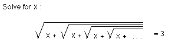

Sample Problems from Chapter 3
Chapter 3: Ian's Proof: Infinity = -1
1. Ian's problem- Ian came back one year from Winter break with
this problem. He also brought me a copy of 'The Math Calendar' by Theoni
Pappus, where he had seen the problem.

2. Ian proves that infinity = -1
Using what you've figured out in chapter 1, can you write as a fraction
the sum of this infinite series?
1 + a + a2 + a3 + a4 +
a5 + ... = ?
To answers from Ch. 3
To order Don's
materials
To choose sample problems from
other chapters
Mathman
home